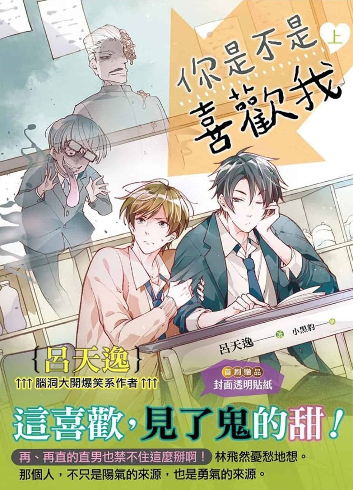

Bajo, rico y guapo, Lin Feiran siempre fue el centro de atención. Pero tras cambiarse de escuela en segundo año de preparatoria, descubrió que su compañero de Adonis, Gu Kaifeng, le había arrebatado el protagonismo.
Lin Feiran estaba muy resentido, y él y Gu Kaifeng se convirtieron en archienemigos (de forma unilateral). Aunque vivían juntos, eran como extraños.
Cuando Lin Feiran regresó a casa para asistir al funeral de su abuelo, heredó accidentalmente los ojos Yin-Yang que se habían transmitido de generación en generación. Tras adquirir la capacidad de ver fantasmas, el tímido Lin Feiran descubrió que su dormitorio para dos personas era en realidad una habitación fantasmal para dieciséis. Todos los días, el miedo lo hacía desmayarse.
Lo más molesto es que, debido a su constitución corporal innata, Gu Kaifeng poseía una abundante energía Yang. Lin Feiran descubrió que cada vez que tocaba a Gu Kaifeng, su energía Yang podía inutilizar temporalmente sus ojos Yin-Yang. Un toque ligero los inutilizaba durante cinco minutos, un beso durante una hora, y así sucesivamente...
Lin Feiran no tuvo más remedio que entregarse a su archienemigo. Este cambio radical en su actitud hacia la intimidad con Gu Kaifeng persistió día tras día, de la mañana a la noche.
Para dormir, tenía que apretujarse en la misma cama que Gu Kaifeng. ¿Ir al baño? Tenía que arrastrar a Gu Kaifeng consigo. ¿Hacer la tarea? Tenía que hacerla codo con codo con Gu Kaifeng... También tuvo que esforzarse al máximo para convencer al profesor de que lo hiciera compañero de pupitre de Gu Kaifeng. Todos los días en clase, le frotaba la pantorrilla con el pie bajo los pupitres...
Tras el repentino cambio de personalidad del pequeño bastardo pegajoso, Gu Kaifeng, inicialmente sorprendido, se enamoró poco a poco. A diario perseguía a Lin Feiran para coquetear con él, hacerle confesiones disparatadas e incluso empujarlo contra la pared y besarlo...
Gu Kaifeng: "¿No te gusto? Me gustas, así que estemos juntos".
Lin Feiran: "¡No me gustas! ¡No vengas!"
Gu Kaifeng: "..."
Cinco minutos después, para evitar ver fantasmas, Lin Feiran se acercó sigilosamente a tocar a Gu Kaifeng.
Gu Kaifeng se dio la vuelta y detuvo su mano: "Después de rechazarme, ¿¡vuelves a coquetear conmigo!?"
Lin Feiran: "¿Quién te está coqueteando? Me descuidé y te toqué; no creas que me gustas también".
Oh, eso es todo.